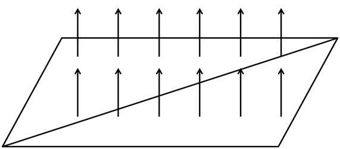
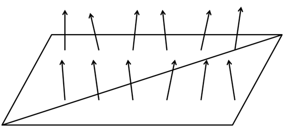
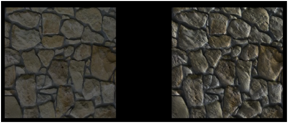

第14章 - 法线贴图（Normal Mapping）
在本章中，我们将解释一种能够显著改善我们3D模型外观的技术。到目前为止，我们已经能够将纹理应用于复杂的3D模型，但距离真实物体的外观还有很远的距离。现实世界中的表面并非完全平坦，它们存在我们当前3D模型所没有的缺陷。
为了渲染更真实的场景，我们将使用法线贴图（Normal Mapping）。如果您观察现实世界中的平面，您会发现即使在远处，这些缺陷也可以通过光线在其上的反射方式看到。在3D场景中，平面将没有缺陷，我们可以对其应用纹理，但我们不会改变光线在其上的反射方式。这就是区别所在。
我们可能会考虑通过增加三角形数量来增加模型的细节并反映这些缺陷，但这会降低性能。我们需要一种方法来改变光线在表面上的反射方式以增加真实感。这可以通过法线贴图技术实现。
您可以在此处找到本章的完整源代码。
概念
让我们回到平面示例，一个平面可以由形成四边形的两个三角形定义。如果您还记得光照章节，模拟光线如何反射的元素是表面法线。在这种情况下，整个表面只有一个法线，表面上的每个片段在计算光线如何影响它们时都使用相同的法线。这在下图中显示。

如果我们能改变表面上每个片段的法线，我们就可以模拟表面缺陷，以更真实的方式渲染它们。这在下图中显示。

我们将通过加载另一个存储表面法线的纹理来实现这一点。法线纹理的每个像素将包含存储为 RGB 值的法线的 \(x\)、y 和 \(z\) 坐标值。
让我们使用以下纹理来绘制一个四边形。
上面图像的法线贴图纹理示例可能如下所示。

正如您所见，这就像我们对原始纹理应用了颜色转换。每个像素使用颜色分量存储法线信息。查看法线贴图时通常会看到的一点是，主导颜色倾向于蓝色。这是因为法线指向正 \(z\) 轴。对于平面，\(z\) 分量通常比 \(x\) 和 \(y\) 分量的值高得多，因为法线指向表面外部。由于 \(x\)、\(y\)、\(z\) 坐标映射到 RGB，蓝色分量的值也会更高。
因此，要使用法线贴图渲染对象，我们只需要一个额外的纹理，并在渲染片段时使用它来获取适当的法线值。
实现
通常，法线贴图不是以那种方式定义的，它们通常定义在所谓的切线空间中。切线空间是模型每个三角形的局部坐标空间（coordinate space）。在该坐标空间中，\(z\) 轴始终指向表面外部。这就是为什么法线贴图通常呈蓝色的原因，即使对于具有相对面的复杂模型也是如此。为了处理切线空间，我们需要法线、切线和副切线向量。我们已经有了法线向量，切线和副切线向量是垂直于法线的向量。我们需要这些向量来计算 TBN 矩阵，这将允许我们使用切线空间中的数据到我们在着色器中使用的坐标空间。
您可以在此处查看关于这方面的一个很棒的教程。
因此，第一步是添加对法线贴图的支持，加载 ModelLoader 类，包括切线和副切线信息。如果您还记得，在为 assimp 设置模型加载标志时，我们包含了这个标志：aiProcess_CalcTangentSpace。这个标志允许自动计算切线和副切线数据。
在 processMaterial 方法中，我们将首先查询是否存在法线贴图纹理。如果存在，我们将加载该纹理并将该纹理路径与材质关联：
public class ModelLoader {
...
private static Material processMaterial(AIMaterial aiMaterial, String modelDir, TextureCache textureCache) {
...
try (MemoryStack stack = MemoryStack.stackPush()) {
...
AIString aiNormalMapPath = AIString.calloc(stack);
Assimp.aiGetMaterialTexture(aiMaterial, aiTextureType_NORMALS, 0, aiNormalMapPath, (IntBuffer) null,
null, null, null, null, null);
String normalMapPath = aiNormalMapPath.dataString();
if (normalMapPath != null && normalMapPath.length() > 0) {
material.setNormalMapPath(modelDir + File.separator + new File(normalMapPath).getName());
textureCache.createTexture(material.getNormalMapPath());
}
return material;
}
}
...
}
在 processMesh 方法中，我们还需要加载切线和副切线的数据：
public class ModelLoader {
...
private static Mesh processMesh(AIMesh aiMesh) {
...
float[] tangents = processTangents(aiMesh, normals);
float[] bitangents = processBitangents(aiMesh, normals);
...
return new Mesh(vertices, normals, tangents, bitangents, textCoords, indices);
}
...
}
processTangents 和 processBitangents 方法与加载法线的方法非常相似：
public class ModelLoader {
...
private static float[] processBitangents(AIMesh aiMesh, float[] normals) {
AIVector3D.Buffer buffer = aiMesh.mBitangents();
float[] data = new float[buffer.remaining() * 3];
int pos = 0;
while (buffer.remaining() > 0) {
AIVector3D aiBitangent = buffer.get();
data[pos++] = aiBitangent.x();
data[pos++] = aiBitangent.y();
data[pos++] = aiBitangent.z();
}
// Assimp may not calculate tangents with models that do not have texture coordinates. Just create empty values
if (data.length == 0) {
data = new float[normals.length];
}
return data;
}
...
private static float[] processTangents(AIMesh aiMesh, float[] normals) {
AIVector3D.Buffer buffer = aiMesh.mTangents();
float[] data = new float[buffer.remaining() * 3];
int pos = 0;
while (buffer.remaining() > 0) {
AIVector3D aiTangent = buffer.get();
data[pos++] = aiTangent.x();
data[pos++] = aiTangent.y();
data[pos++] = aiTangent.z();
}
// Assimp may not calculate tangents with models that do not have texture coordinates. Just create empty values
if (data.length == 0) {
data = new float[normals.length];
}
return data;
}
...
}
正如您所见，我们还需要修改 Mesh 和 Material 类来保存新数据。让我们从 Mesh 类开始：
public class Mesh {
...
public Mesh(float[] positions, float[] normals, float[] tangents, float[] bitangents, float[] textCoords, int[] indices) {
...
// Tangents VBO
vboId = glGenBuffers();
vboIdList.add(vboId);
FloatBuffer tangentsBuffer = MemoryUtil.memCallocFloat(tangents.length);
tangentsBuffer.put(0, tangents);
glBindBuffer(GL_ARRAY_BUFFER, vboId);
glBufferData(GL_ARRAY_BUFFER, tangentsBuffer, GL_STATIC_DRAW);
glEnableVertexAttribArray(2);
glVertexAttribPointer(2, 3, GL_FLOAT, false, 0, 0);
// Bitangents VBO
vboId = glGenBuffers();
vboIdList.add(vboId);
FloatBuffer bitangentsBuffer = MemoryUtil.memCallocFloat(bitangents.length);
bitangentsBuffer.put(0, bitangents);
glBindBuffer(GL_ARRAY_BUFFER, vboId);
glBufferData(GL_ARRAY_BUFFER, bitangentsBuffer, GL_STATIC_DRAW);
glEnableVertexAttribArray(3);
glVertexAttribPointer(3, 3, GL_FLOAT, false, 0, 0);
// Texture coordinates VBO
...
glEnableVertexAttribArray(4);
glVertexAttribPointer(4, 2, GL_FLOAT, false, 0, 0);
...
MemoryUtil.memFree(tangentsBuffer);
MemoryUtil.memFree(bitangentsBuffer);
...
}
...
}
我们需要为切线和副切线数据创建两个新的顶点缓冲对象（其结构类似于法线数据），因此需要更新纹理坐标顶点缓冲对象的位置。
在 Material 类中，我们需要包含法线贴图纹理的路径：
public class Material {
...
private String normalMapPath;
...
public String getNormalMapPath() {
return normalMapPath;
}
...
public void setNormalMapPath(String normalMapPath) {
this.normalMapPath = normalMapPath;
}
...
}
现在我们需要修改着色器，从场景顶点着色器（scene.vert）开始：
#version 330
layout (location=0) in vec3 position;
layout (location=1) in vec3 normal;
layout (location=2) in vec3 tangent;
layout (location=3) in vec3 bitangent;
layout (location=4) in vec2 texCoord;
out vec3 outPosition;
out vec3 outNormal;
out vec3 outTangent;
out vec3 outBitangent;
out vec2 outTextCoord;
uniform mat4 projectionMatrix;
uniform mat4 viewMatrix;
uniform mat4 modelMatrix;
void main()
{
mat4 modelViewMatrix = viewMatrix * modelMatrix;
vec4 mvPosition = modelViewMatrix * vec4(position, 1.0);
gl_Position = projectionMatrix * mvPosition;
outPosition = mvPosition.xyz;
outNormal = normalize(modelViewMatrix * vec4(normal, 0.0)).xyz;
outTangent = normalize(modelViewMatrix * vec4(tangent, 0)).xyz;
outBitangent = normalize(modelViewMatrix * vec4(bitangent, 0)).xyz;
outTextCoord = texCoord;
}
正如您所见，我们需要定义与副切线和切线相关的新输入数据。我们以处理法线相同的方式转换这些元素，并将这些数据作为输入传递给片段着色器（scene.frag）：
#version 330
...
in vec3 outTangent;
in vec3 outBitangent;
...
struct Material
{
vec4 ambient;
vec4 diffuse;
vec4 specular;
float reflectance;
int hasNormalMap;
};
...
uniform sampler2D normalSampler;
...
我们首先定义来自顶点着色器的新输入，包括 Material 结构体的一个附加元素，该元素指示是否存在法线贴图（hasNormalMap）。我们还为法线贴图纹理添加了一个新的统一变量（normalSampler）。下一步是定义一个函数，该函数根据法线贴图纹理更新法线：
...
...
vec3 calcNormal(vec3 normal, vec3 tangent, vec3 bitangent, vec2 textCoords) {
mat3 TBN = mat3(tangent, bitangent, normal);
vec3 newNormal = texture(normalSampler, textCoords).rgb;
newNormal = normalize(newNormal * 2.0 - 1.0);
newNormal = normalize(TBN * newNormal);
return newNormal;
}
void main() {
vec4 text_color = texture(txtSampler, outTextCoord);
vec4 ambient = calcAmbient(ambientLight, text_color + material.ambient);
vec4 diffuse = text_color + material.diffuse;
vec4 specular = text_color + material.specular;
vec3 normal = outNormal;
if (material.hasNormalMap > 0) {
normal = calcNormal(outNormal, outTangent, outBitangent, outTextCoord);
}
vec4 diffuseSpecularComp = calcDirLight(diffuse, specular, dirLight, outPosition, normal);
for (int i=0; i<MAX_POINT_LIGHTS; i++) {
if (pointLights[i].intensity > 0) {
diffuseSpecularComp += calcPointLight(diffuse, specular, pointLights[i], outPosition, normal);
}
}
for (int i=0; i<MAX_SPOT_LIGHTS; i++) {
if (spotLights[i].pl.intensity > 0) {
diffuseSpecularComp += calcSpotLight(diffuse, specular, spotLights[i], outPosition, normal);
}
}
fragColor = ambient + diffuseSpecularComp;
if (fog.activeFog == 1) {
fragColor = calcFog(outPosition, fragColor, fog, ambientLight.color, dirLight);
}
}
calcNormal 函数接受以下参数：
- 顶点法线。
- 顶点切线。
- 顶点副切线。
- 纹理坐标。
在该函数中，我们做的第一件事是计算 TBN 矩阵。之后，我们从法线贴图纹理中获取法线值，并使用 TBN 矩阵从切线空间转换到视图空间。请记住，我们获得的颜色是法线坐标，但由于它们存储为 RGB 值，因此它们包含在 [0, 1] 范围内。我们需要将它们转换为 [-1, 1] 范围，所以我们只需乘以二并减去 1。
最后，我们仅在材质定义了法线贴图纹理时才使用该函数。
我们还需要修改 SceneRender 类来创建和使用我们在着色器中使用的新法线：
public class SceneRender {
...
private void createUniforms() {
...
uniformsMap.createUniform("normalSampler");
...
uniformsMap.createUniform("material.hasNormalMap");
...
}
public void render(Scene scene) {
...
uniformsMap.setUniform("normalSampler", 1);
...
for (Model model : models) {
...
for (Material material : model.getMaterialList()) {
...
String normalMapPath = material.getNormalMapPath();
boolean hasNormalMapPath = normalMapPath != null;
uniformsMap.setUniform("material.hasNormalMap", hasNormalMapPath ? 1 : 0);
...
if (hasNormalMapPath) {
Texture normalMapTexture = textureCache.getTexture(normalMapPath);
glActiveTexture(GL_TEXTURE1);
normalMapTexture.bind();
}
...
}
}
...
}
...
}
我们需要更新天空盒顶点着色器，因为我们在法线数据和纹理坐标之间有了新的向量：
#version 330
layout (location=0) in vec3 position;
layout (location=1) in vec3 normal;
layout (location=4) in vec2 texCoord;
...
最后一步是更新 Main 类来展示这种效果。我们将加载两个四边形，一个带有法线贴图，一个不带。此外，我们将使用左右箭头控制光线角度以显示效果。
public class Main implements IAppLogic {
...
public static void main(String[] args) {
...
Engine gameEng = new Engine("chapter-14", new Window.WindowOptions(), main);
...
}
...
public void init(Window window, Scene scene, Render render) {
String wallNoNormalsModelId = "quad-no-normals-model";
Model quadModelNoNormals = ModelLoader.loadModel(wallNoNormalsModelId, "resources/models/wall/wall_nonormals.obj",
scene.getTextureCache());
scene.addModel(quadModelNoNormals);
Entity wallLeftEntity = new Entity("wallLeftEntity", wallNoNormalsModelId);
wallLeftEntity.setPosition(-3f, 0, 0);
wallLeftEntity.setScale(2.0f);
wallLeftEntity.updateModelMatrix();
scene.addEntity(wallLeftEntity);
String wallModelId = "quad-model";
Model quadModel = ModelLoader.loadModel(wallModelId, "resources/models/wall/wall.obj",
scene.getTextureCache());
scene.addModel(quadModel);
Entity wallRightEntity = new Entity("wallRightEntity", wallModelId);
wallRightEntity.setPosition(3f, 0, 0);
wallRightEntity.setScale(2.0f);
wallRightEntity.updateModelMatrix();
scene.addEntity(wallRightEntity);
SceneLights sceneLights = new SceneLights();
sceneLights.getAmbientLight().setIntensity(0.2f);
DirLight dirLight = sceneLights.getDirLight();
dirLight.setPosition(1, 1, 0);
dirLight.setIntensity(1.0f);
scene.setSceneLights(sceneLights);
Camera camera = scene.getCamera();
camera.moveUp(5.0f);
camera.addRotation((float) Math.toRadians(90), 0);
lightAngle = -35;
}
...
public void input(Window window, Scene scene, long diffTimeMillis, boolean inputConsumed) {
if (inputConsumed) {
return;
}
float move = diffTimeMillis * MOVEMENT_SPEED;
Camera camera = scene.getCamera();
if (window.isKeyPressed(GLFW_KEY_W)) {
camera.moveForward(move);
} else if (window.isKeyPressed(GLFW_KEY_S)) {
camera.moveBackwards(move);
}
if (window.isKeyPressed(GLFW_KEY_A)) {
camera.moveLeft(move);
} else if (window.isKeyPressed(GLFW_KEY_D)) {
camera.moveRight(move);
}
if (window.isKeyPressed(GLFW_KEY_LEFT)) {
lightAngle -= 2.5f;
if (lightAngle < -90) {
lightAngle = -90;
}
} else if (window.isKeyPressed(GLFW_KEY_RIGHT)) {
lightAngle += 2.5f;
if (lightAngle > 90) {
lightAngle = 90;
}
}
MouseInput mouseInput = window.getMouseInput();
if (mouseInput.isRightButtonPressed()) {
Vector2f displVec = mouseInput.getDisplVec();
camera.addRotation((float) Math.toRadians(-displVec.x * MOUSE_SENSITIVITY), (float) Math.toRadians(-displVec.y * MOUSE_SENSITIVITY));
}
SceneLights sceneLights = scene.getSceneLights();
DirLight dirLight = sceneLights.getDirLight();
double angRad = Math.toRadians(lightAngle);
dirLight.getDirection().x = (float) Math.sin(angRad);
dirLight.getDirection().y = (float) Math.cos(angRad);
}
...
}
结果如下图所示。

正如您所见，应用了法线纹理的四边形给人一种体积更大的印象。尽管它本质上与另一个四边形一样是平面，但您可以看到光线是如何反射的。